Профілактика · журнал «ДентАрт» 2017 №3
«Здорова усмішка наших дітей» – проект, що приніс радість і стоматологам, і пацієнтам
«HEALTHY SMILE OF OUR CHILDREN» – IT IS A PROJECT THAT BROUGHT GLADNESS TO BOTH DENTISTS AND PATIENTS
Кафедра стоматології дитячого віку Інституту стоматології НМАПО імені П. Л. Шупика за підтримки партнерів Dentsply Sirona, під патронатом НМАПО імені П. Л. Шупика, ГО «Академія стоматологічного здоров'я» за програмою проведення тижнів професійної профілактики стоматологічних захворювань у дитячого населення ініціювала проект «Здорова усмішка наших дітей», який здійснювався у травні 2017 року на клінічній базі кафедри. Комплекс запланованих професійних профілактичних заходів передбачав огляд дітей фахівцями кафедри стоматології дитячого віку; проведення професійної гігієни ротової порожнини з використанням щіточок і паст, а за необхідності – з використанням сучасного ультразвукового апарату Cavitron (Dentsply); рекомендації щодо методів та засобів індивідуальної гігієни ротової порожнини у домашніх умовах, використання дитячої лінійки зубних паст компанії Лакалут.
За даними багатьох авторів, поширеність карієсу у 12-річних дітей в Україні сягає 72,7-91,4%, а у 15-річних – 81,3-94,3%. При цьому кількість уражених зубів за показниками кп+КПВ у 12-річних дітей становить 2,23±0,21 – 3,71±0,37, а за три роки (у 15-річних) він достовірно зростає до 3,91±0,39 – 6,18±1,01. На жаль, останнім часом цим показникам поширеності карієсу не поступаються показники поширеності захворювань тканин пародонту, і передусім хронічного генералізованого катарального гінгівіту. У дітей 12-ти та 15-ти років у різних регіонах України поширеність захворювань тканин пародонту становить 46,7-74,3% та 60-98% відповідно.1-4
Таким чином, можна стверджувати, що у 70-80% і більше дітей 12- та 15-річного віку одночасно при проведенні стоматологічного обстеження виявляють як карієс, так і захворювання тканин пародонту. На нашу думку, асоційованість формування обох форм захворювань зумовлена єдністю патогенетичних механізмів, передусім порушенням мікроекології ротової порожнини на тлі несформованого місцевого імунітету, надмірною контамінацією поверхні зубів та ясенної борозни карієсогенною та пародонтопатогенною мікрофлорою.
Найбільш значущі фактори ризику карієсу та захворювань тканин пародонту – нераціональний догляд за ротовою порожниною; порушення мікроекології ротової порожнини та місцевого імунітету, наслідком чого є тривале персистування карієсогенної та пародонтопатогенної мікрофлори; постійне джерело карієсогенної і пародонтопатогенної мікрофлори та реінфікування; мікро- та макроелементози, передусім порушення метаболізму кальцію, недостатня/надлишкова кількість фтору, що спричиняє порушення формування емалі та альвеолярної кістки; недосконала система оглядів і диспансерного нагляду.
Реалізація карієсогенних властивостей бактерій відбувається поступово. Ще до прорізування тимчасових зубів, як правило, здійснюється колонізація ротової порожнини дитини Str. mutans. Якісні та кількісні показники бактеріальної колонізації збільшуються після прорізування зубів за рахунок контамінації зубної бляшки. Близько 70% об'єму зрілої зубної бляшки становлять мікроорганізми.5,6
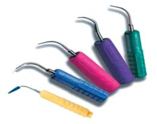
Враховуючи це, на наш погляд, слід звертати особливу увагу на раціональний догляд за ротовою порожниною у дітей, починаючи з прорізування першого зубчика, а після формування тимчасового прикусу за необхідності застосовувати професійну гігієну ротової порожнини з використанням сучасних підходів та способів профілактики.
За період проведення акції «Здорова усмішка наших дітей» було обстежено 89 дітей різних вікових груп (від 2 до 18 років), і більшість із них потребувала професійної гігієни, а також корекції індивідуальної гігієни ротової порожнини. На кафедрі стоматології дитячого віку для забезпечення проведення тижнів професійної профілактики стоматологічних захворювань у дитячого населення було задіяно одночасно 4 фахівці та виділено 60 хв для кожного пацієнта. Робота велася за попереднім записом, що дало змогу підготувати робоче місце та оснащення для прийому відповідно до віку дитини.
Під час обстеження визначали головні фактори ризику розвитку основних стоматологічних захворювань у дітей, передусім карієсу та захворювань тканин пародонту; оцінювали стан стоматологічного здоров'я (активність, інтенсивність каріозного процесу, наявність та потребу в ортодонтичному супроводі та ін.). 78% оглянутих дітей було проведено гігієнічні заходи безпосередньо у день відвідин, і 45% з них професійна гігієна провадилася із застосуванням сучасного магнітостриктивного апарата Cаvitron Select SPS з резервуаром (Dentsply Sirona) – єдиного апарата, який ми застосовуємо для зняття кальцифікованих зубних нашарувань та м'якого зубного нальоту у дитячому віці. Завдяки м'якості та комфорту роботи з цим апаратом ним безпечно і безболісно можна провести професійну гігієну ротової порожнини у дітей. Апарат забезпечує безпеку лікаря при роботі з тканинами пародонту у ранньому віці, а також не викликає негативної реакції у маленьких пацієнтів.
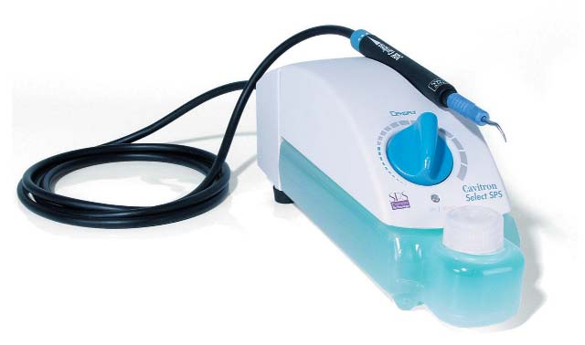
До цього процесу активно залучалися батьки наших маленьких пацієнтів, які мають здійснювати безпосередній контроль за дотриманням індивідуальної гігієни ротової порожнини у дітей у домашніх умовах. Під час огляду дітей батьки заповнювали анкети, що дало нам змогу оцінити обізнаність у питаннях засобів та методів індивідуальної гігієни ротової порожнини як їх самих, так і дітей, та у відповідності з цим надати рекомендації.
А тепер кілька слів про апарат Cavitron Select SPS з резервуаром – перший портативний апарат Cavitron з автономним резервуаром для води. Cavitron Select SPS має частоту коливань 30 кГц, при цьому ви більше не залежите від водогону; для роботи потрібне лише джерело живлення. Зручність для користувача – Cavitron Select SPS з резервуаром для води дозволяє лікареві видаляти зубні відкладення без зовнішньої подачі води. Процедура проста, ємність заповнюється водою або медикаментозним розчином (наприклад, хлоргексидином) без від'єднання від апарату. Подача води регулюється на самому наконечнику. Це дозволяє з легкістю контролювати ступінь зрошення. Користувач може регулювати потік води протягом процедури і при цьому не тягнутися до апарата. Завдяки своїм компактним розмірам Cavitron Select SPS можна легко переміщувати з кабінету в кабінет. Нас привабила унікальна технологія SPS (Sustained Performance System – система стабільної експлуатації). Ця конструкція має потужність на виході 30000 коливань за хвилину – технологія SPS зберігає клінічну ефективність при налаштуваннях малої потужності. Блакитна зона (розширений діапазон малої потужності) для підвищеного комфорту пацієнта, особливо під час під'ясенного зняття зубних відкладень. Спеціальні насадки Focused Spray відповідають клінічним потребам для ефективної профілактичної та пародонтологічної практики, адаптуючись до різної анатомії кореня зуба.
Під час професійної гігієни ротової порожнини у дітей ми використовували при знятті зубних відкладень насадку Implant Insert із захисним пластиковим наконечником (жовта насадка із синім наконечником). Перевага цієї насадки в тому, що при ефективному знятті як м'яких, так і твердих зубних нашарувань немає безпосереднього контакту металевої частини насадки з незрілими та слабко мінералізованими твердими тканинами зубів у дітей, а це запобігає пошкодженню твердих тканин зубів і робить цю процедуру комфортною, безболісною і в той же час ефективною.
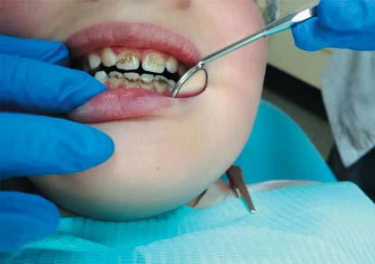
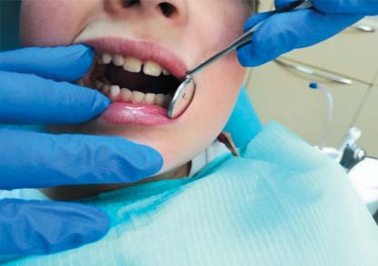
Наконечник Steri Mate з регулятором потоку води з одночасним регулюванням температури (від прохолодної до теплої) (Сavitron).
Функція Boost за допомогою ножної педалі забезпечує тимчасове збільшення потужності для видалення масивного зубного каменю, не відриваючись від роботи з пацієнтом для регулювання рівня потужності. Наконечник Steri Mate – компактний, легкий, знімний – забезпечує більший комфорт стоматологові під час роботи, і лікар менше втомлюється. Обертається наконечник більш ніж на 300°, що полегшує доступ. Біотехнологічний, знижується ризик перехресної контамінації. Контроль подачі води розташовується на наконечнику. Просте регулювання води, яке не відволікає від роботи з пацієнтом, – це теж одна з переваг цього наконечника.
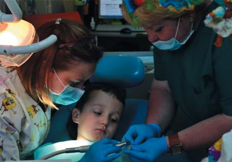
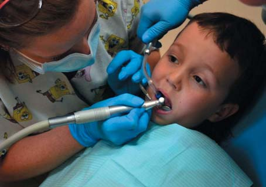
Пацієнт К. до зняття нальоту Прістлі та після цього.
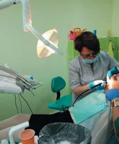
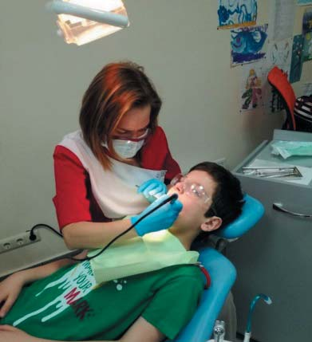
Зняття м'якого зубного нальоту у маленького пацієнта К. за допомогою щіточки і пасти NUPRO® Sensodyne Polish з компонентом Novamin.
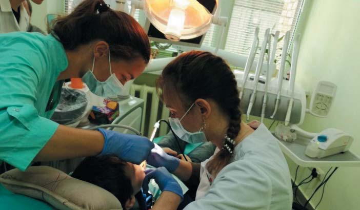
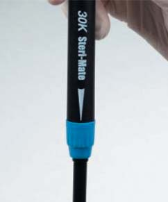
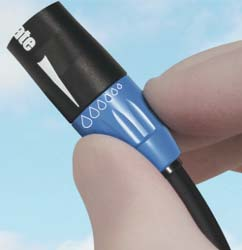
Професійна гігієна ротової порожнини за допомогою Cаvitron Select SPS з резервуаром (Dentsply) та насадкою Focused Spray Implant Insert із захисним пластиковим наконечником.
Закінчення процедури професійної гігієни ротової порожнини здійснювалося шляхом використання щіточок різної форми та м'якості, гумових полірувальних чашок і пасти NUPRO® Sensodyne Polish з компонентом Novamin (кальцієво-натрієвий фосфосилікат), Dentsply.7 Застосування такого алгоритму професійної гігієни ротової порожнини подарувало нашим відвідувачам можливість сповна насолодитися чистотою у роті та білосніжною усмішкою після процедури.
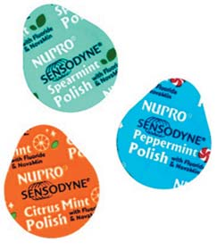
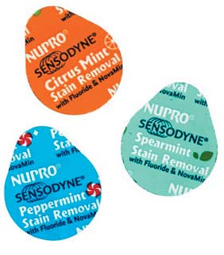
Професійна профілактична паста NUPRO® Sensodyne Polish з компонентом Novamin. Професійна профілактична паста NUPRO® Sensodyne Stain Removal з компонентом Novamin.
Дітям, які не потребували застосування ультразвукового скейлінгу, професійна гігієна ротової порожнини робилася за допомогою щіточок різної форми та м'якості, відповідно до вікових особливостей дитини. Для зняття м'якого зубного нальоту ми використовували пасту NUPRO® Sensodyne Stain Removal з Novamin (кальцієво-натрієвий фосфосилікат) із вмістом фтору або без фтору та пасту NUPRO® Sensodyne Polish – у залежності від віку дитини. Пасту наносили також за допомогою гумових чашок, використовуючи кутовий наконечник на низькій швидкості, втираючими рухами, наприкінці промиваючи ротову порожнину водою.
Процедура обов'язково завершувалася наданням рекомендацій батькам щодо методів та засобів підтримання у домашніх умовах ретельної індивідуальної гігієни ротової порожнини дитини та відповідно до стану стоматологічного здоров'я — щодо графіку проходження профілактичних оглядів у кожному конкретному випадку. Кожна дитина наприкінці прийому на подарунок одержала дитячу зубну пасту Лакалут залежно від віку пацієнта, а також книжку-розмальовку для навчання правильній гігієні ротової порожнини.
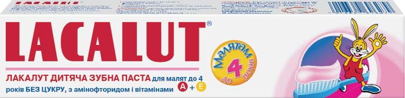
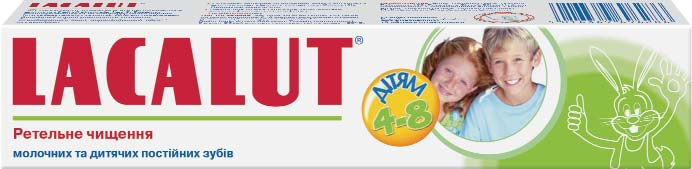
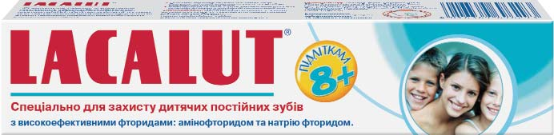

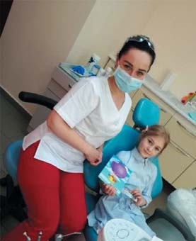
Маленькі пацієнти задоволені і процедурою, і подарунками від компанії Лакалут.
Відгуки пацієнтів
Ольга, мама пацієнтки Нелі:
– Дуже рада можливості отримати кваліфіковану допомогу і поліпшити усмішку моєї доньки. Нам надали цінні рекомендації щодо гігієни в домашніх умовах. Щиро дякую працівникам кафедри стоматології дитячого віку за їхні дбайливі руки.
Пацієнт Владислав, 13 років:
– Мені зовсім не боліло, було навіть приємно. Дуже сподобалося таке лікування. Вважаю, що вся стоматологія повинна бути такою.
В останній день проекту відбувся майстер-клас під керівництвом завідувача кафедри І. О. Трубки «Обґрунтування застосування індивідуальної та професійної гігієни ротової порожнини у дітей» для лікарів-стоматологів загального профілю, дитячих стоматологів, зубних гігієністів. Учасники курсу, керівники та лікарі лікувальних закладів стоматології дитячого віку випробували особисто всі клінічні переваги ультразвукового скейлінгу і технології подолання гіперестезії зубів від Dentsply Sirona.
З гарним настроєм та професійним натхненням усі повернулися до своєї щоденної праці задля блага своїх улюблених маленьких пацієнтів, щоб реалізовувати найкращі підходи у їхньому лікуванні.
Запрошуємо всіх охочих колег підвищувати кваліфікацію та одержувати професійну підтримку, яку ми надаємо на нашій кафедрі стоматології дитячого віку Інституту стоматології Національної медичної академії післядипломної освіти імені П. Л. Шупика.
Література
- Остапко О.І. Наукове обґрунтування шляхів та методів профілактики основних стоматологічних захворювань у дітей в регіонах з різним рівнем забруднення довкілля/Автореф. д. мед. н. – Київ. –2011. –41 с.
- Морозов С.А. Клинико-лабораторное обоснование профилактических мероприятий при кариесе у детей с задержкой внутриутробного развития/С.А. Морозов, О.В. Деньга//Перспективи медицини та біології. –2013. –Т. 5. –№1.–С. 37-43.
- Ковач И.В. Заболеваемость кариесом зубов и уровень гигиенического состояния полости рта у детей дошкольного возраста г. Днепропетровска/ И.В. Ковач, А.В. Штомпель//Вісник стоматології. –№ 3. –2010. –С. 75-78.
- Лучинський М.А. Стоматологічна захворюваність дітей Івано-Франківської області/М.А. Лучинський, Ю.В. Октисюк, А.М. Лучинський, Ю.І. Гончар, В.М. Лучинський//Вісник стоматології. –№1. –2010. –С. 66-68.
- Савичук Н.О. Профилактика и лечение начального кариеса зубов у детей/Н.О. Савичук, А.В. Савичук//Therapi.–№ 12 (32). –2008. –C. 53-56.
- Савичук Н.О. Інноваційні підходи до профілактики карієсу зубів у дітей і вагітних жінок/Н.О. Савичук//Современная стоматология. –№5. –2013. –C. 46-50.
- Evidence for a Fluoridated NovaMin®-Containing Toothpaste in Providing Relief from Dentin Hypersensitivity (The Journal of Clinical Dentistry (ISSN 0895-8831) is published by Professional Audience Communications, Inc., P.O. Box 243, Yardley, PA 19067. POSTMASTER; Send address changes to P. O. Box 243, Yardley, PA 19067).